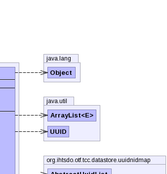
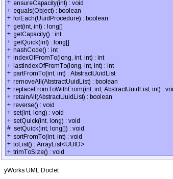

public class UuidArrayList extends AbstractUuidList
|  | |
|  |
| Modifier and Type | Field and Description |
|---|---|
protected long[] |
elements
The array buffer into which the elements of the list are stored.
|
size| Constructor and Description |
|---|
UuidArrayList()
Constructs an empty list.
|
UuidArrayList(int initialCapacity)
Constructs an empty list with the specified initial capacity.
|
UuidArrayList(long[] elements)
Constructs a list containing the specified elements.
|
| Modifier and Type | Method and Description |
|---|---|
void |
add(long[] element)
Appends the specified element to the end of this list.
|
void |
add(UUID element) |
void |
beforeInsert(int index,
long[] element)
Inserts the specified element before the specified position into the
receiver.
|
int |
binarySearchFromTo(long[] key,
int from,
int to)
Searches the receiver for the specified value using the binary search
algorithm.
|
Object |
clone()
Returns a deep copy of the receiver.
|
UuidArrayList |
copy()
Returns a deep copy of the receiver; uses
clone() and casts
the result. |
long[] |
elements()
Returns the elements currently stored, including invalid elements between
size and capacity, if any.
|
AbstractUuidList |
elements(long[] elements)
Sets the receiver's elements to be the specified array (not a copy of
it).
|
void |
ensureCapacity(int minCapacity)
Ensures that the receiver can hold at least the specified number of
elements without needing to allocate new internal memory.
|
boolean |
equals(Object otherObj)
Compares the specified Object with the receiver.
|
boolean |
forEach(UuidProcedure procedure)
Applies a procedure to each element of the receiver, if any.
|
long[] |
get(int index,
int nid)
Returns the element at the specified position in the receiver.
|
int |
getCapacity() |
long[] |
getQuick(int index)
Returns the element at the specified position in the receiver;
WARNING: Does not check preconditions.
|
int |
hashCode() |
int |
indexOfFromTo(long element,
int from,
int to)
Returns the index of the first occurrence of the specified element.
|
int |
lastIndexOfFromTo(long element,
int from,
int to)
Returns the index of the last occurrence of the specified element.
|
AbstractUuidList |
partFromTo(int from,
int to)
Returns a new list of the part of the receiver between
from,
inclusive, and to, inclusive. |
boolean |
removeAll(AbstractUuidList other)
Removes from the receiver all elements that are contained in the
specified list.
|
void |
replaceFromToWithFrom(int from,
int to,
AbstractUuidList other,
int otherFrom)
Replaces a number of elements in the receiver with the same number of
elements of another list.
|
boolean |
retainAll(AbstractUuidList other)
Retains (keeps) only the elements in the receiver that are contained in
the specified other list.
|
void |
reverse()
Reverses the elements of the receiver.
|
void |
set(int index,
long element)
Replaces the element at the specified position in the receiver with the
specified element.
|
void |
setQuick(int index,
long element)
Replaces the element at the specified position in the receiver with the
specified element; WARNING: Does not check preconditions.
|
protected void |
setQuick(int index,
long[] element)
Replaces the element at the specified position in the receiver with the specified element;
WARNING: Does not check preconditions.
|
void |
sortFromTo(int from,
int to)
Sorts the specified range of the receiver into ascending order.
|
ArrayList<UUID> |
toList() |
void |
trimToSize()
Trims the capacity of the receiver to be the receiver's current size.
|
addAllOfFromTo, beforeInsertAllOfFromTo, beforeInsertDummies, binarySearch, contains, delete, fillFromToWith, get, indexOf, indexOfFromTo, lastIndexOf, lastIndexOfFromTo, mergeSortFromTo, mergeSortFromTo, quickSortFromTo, quickSortFromTo, removeFromTo, replaceFromToWithFromTo, set, setSizeRaw, size, times, toStringprotected long[] elements
public UuidArrayList()
public UuidArrayList(long[] elements)
elements - the array to be backed by the the constructed listpublic UuidArrayList(int initialCapacity)
initialCapacity - the number of elements the receiver can hold without
auto-expanding itself by allocating new internal memory.public void add(long[] element)
add in class AbstractUuidListelement - element to be appended to this list.public void add(UUID element)
public void beforeInsert(int index,
long[] element)
beforeInsert in class AbstractUuidListindex - index before which the specified element is to be inserted
(must be in [0,size]).element - element to be inserted.IndexOutOfBoundsException - index is out of range (
index < 0 || index > size()).public int binarySearchFromTo(long[] key,
int from,
int to)
binarySearchFromTo in class AbstractUuidListkey - the value to be searched for.from - the leftmost search position, inclusive.to - the rightmost search position, inclusive.org.ihtsdo.cern.colt.Sorting,
Arrayspublic Object clone()
clone in class AbstractUuidListpublic UuidArrayList copy()
clone() and casts
the result.public long[] elements()
elements in class AbstractUuidListpublic AbstractUuidList elements(long[] elements)
elements in class AbstractUuidListelements - the new elements to be stored.public void ensureCapacity(int minCapacity)
ensureCapacity in class AbstractUuidListminCapacity - the desired minimum capacity.public boolean equals(Object otherObj)
public boolean forEach(UuidProcedure procedure)
forEach in class AbstractUuidListprocedure - the procedure to be applied. Stops iteration if the procedure
returns false, otherwise continues.public long[] get(int index,
int nid)
index - index of element to return.nid - IndexOutOfBoundsException - index is out of range (index < 0 || index >=
size()).public long[] getQuick(int index)
getQuick in class AbstractUuidListindex - index of element to return.public int indexOfFromTo(long element,
int from,
int to)
-1 if the receiver does not contain this element.
Searches between from, inclusive and to,
inclusive. Tests for identity.element - element to search for.from - the leftmost search position, inclusive.to - the rightmost search position, inclusive.-1 if the element is not found.IndexOutOfBoundsException - index is out of range (
size()>0 && (from<0 || from>to || to>=size())
).public int lastIndexOfFromTo(long element,
int from,
int to)
-1 if the receiver does not contain this element.
Searches beginning at to, inclusive until from,
inclusive. Tests for identity.element - element to search for.from - the leftmost search position, inclusive.to - the rightmost search position, inclusive.-1 if the element is not found.IndexOutOfBoundsException - index is out of range (
size()>0 && (from<0 || from>to || to>=size())
).public AbstractUuidList partFromTo(int from, int to)
from,
inclusive, and to, inclusive.partFromTo in class AbstractUuidListfrom - the index of the first element (inclusive).to - the index of the last element (inclusive).IndexOutOfBoundsException - index is out of range (
size()>0 && (from<0 || from>to || to>=size())
).public boolean removeAll(AbstractUuidList other)
removeAll in class AbstractUuidListother - the other list.true if the receiver changed as a result of the
call.public void replaceFromToWithFrom(int from,
int to,
AbstractUuidList other,
int otherFrom)
from (inclusive) and to (inclusive), with
elements of other, starting from otherFrom
(inclusive).replaceFromToWithFrom in class AbstractUuidListfrom - the position of the first element to be replaced in the
receiverto - the position of the last element to be replaced in the
receiverother - list holding elements to be copied into the receiver.otherFrom - position of first element within other list to be copied.public boolean retainAll(AbstractUuidList other)
retainAll in class AbstractUuidListother - the other list to test against.true if the receiver changed as a result of the
call.public void reverse()
reverse in class AbstractUuidListpublic void set(int index,
long element)
index - index of element to replace.element - element to be stored at the specified position.IndexOutOfBoundsException - index is out of range (index < 0 || index >=
size()).public void setQuick(int index,
long element)
index - index of element to replace.element - element to be stored at the specified position.public void sortFromTo(int from,
int to)
Best case performance: O(N).
sortFromTo in class org.apache.mahout.math.list.AbstractListfrom - the index of the first element (inclusive) to be sorted.to - the index of the last element (inclusive) to be sorted.IndexOutOfBoundsException - index is out of range (size()>0 && (from<0 ||
from>to || to>=size())).public void trimToSize()
trimToSize in class org.apache.mahout.math.list.AbstractListprotected void setQuick(int index,
long[] element)
AbstractUuidListsetQuick in class AbstractUuidListindex - index of element to replace.element - element to be stored at the specified position.public int getCapacity()
Copyright © 2013 International Health Terminology Standards Development Organisation. All rights reserved.